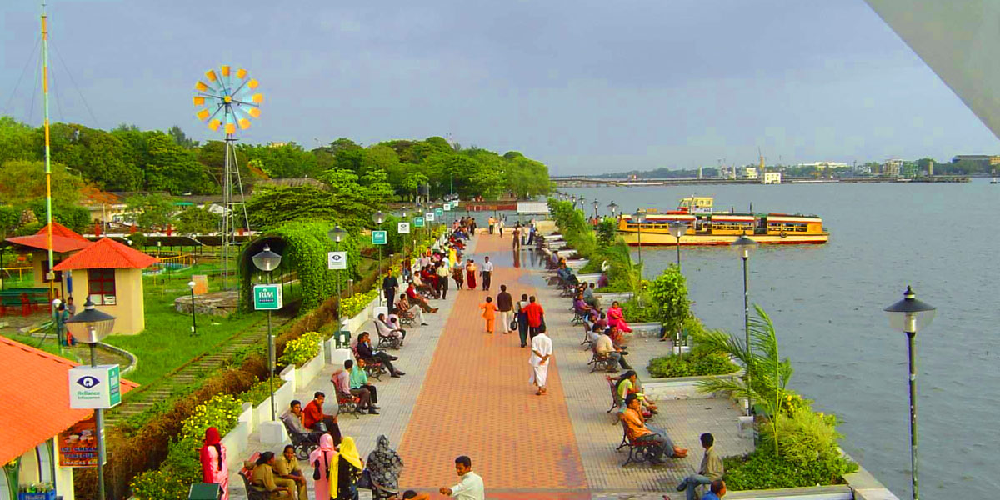
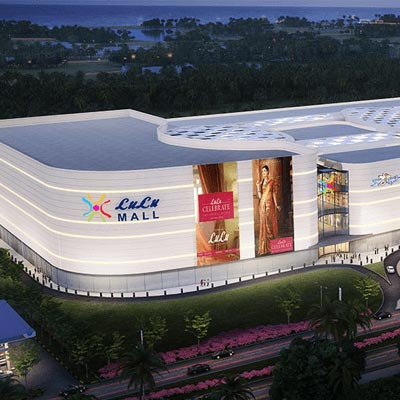
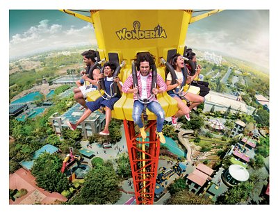
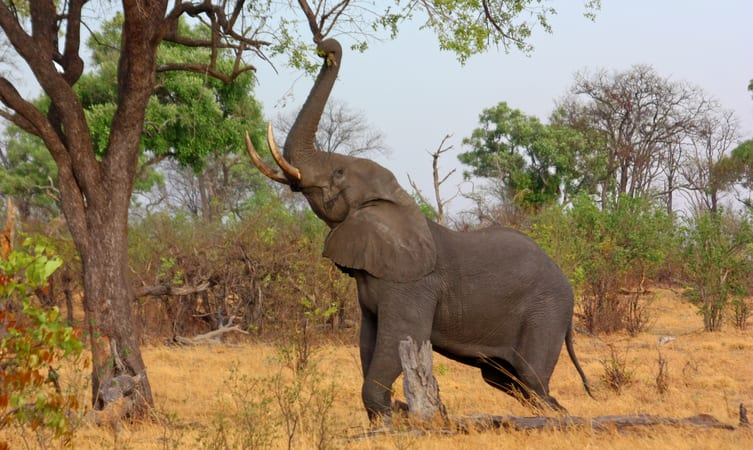
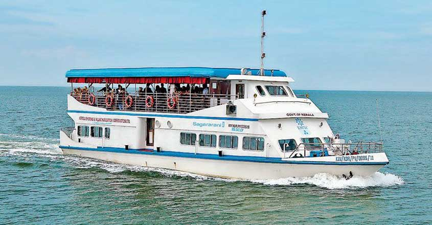
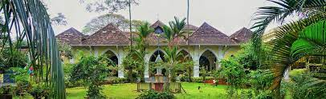

Places To Visit
Marine Drive
Marine Drive is a buzzing waterfront known for the Marine Walkway, popular for evening strolls, and leafy Subhash Bose Park.
Lulu Mall
LuLu Mall, Kochi is Kerala's most preferred shopping, food & entertainment destination and one of India's largest malls.
Wonderla Amusement Park
Wonderla is one of the largest chain of amusement parks in India. It is owned and operated by Wonderla Holidays Limited
Popular Things To Do
Elephant Ride
In a peaceful small village in Kochi named Kodanad, there is this beautiful and magnificent elephant sanctuary, where you can enjoy a great time.The sanctuary is one of the most glorious tourist attractions in the city, where you can even give baths to the animals under the supervision of the experts.
Take a Ferry Ride in Kochi
Among the most fun activities in Kochi, taking a ferry ride is quite prevalent.Imagine taking a perfectly graceful exit from the earthy land and float between the blue sky and water – where you can escape from the city’s busy and stressful life.
Explore the Indo-Portuguese Museum
Located at the garden of the Bishop House in Kochi, the Indo-Portuguese museum in is another place for the history buffs where they can find their own peace of mind.